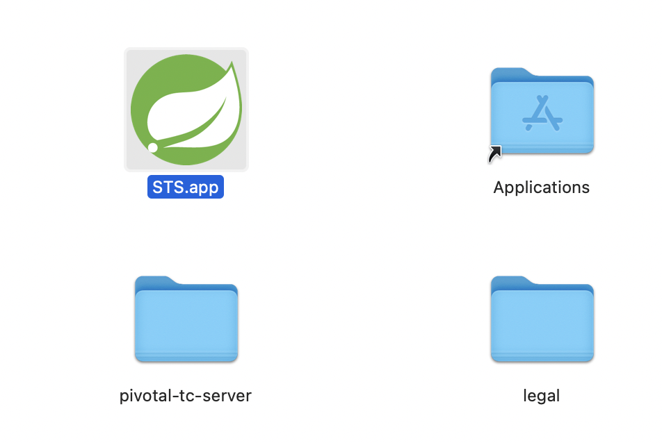

1. 環境構築手順¶
1.1. STSのインストール（MAC）¶
1.1.1. STSとは¶
Springの公式ツールでEclipseベースのIDE
1.1.2. インストール¶
1.1.3. 3.xの場合¶
stsをDLして、展開すると３つappがあるので全部Applicationにいれる。

Applicationのstsを開こうとするとVMが作成できないエラーが出る場合がある。
sts.appを右クリック、パッケージ内容を表示して、/Applications/STS.app/Contents/Eclipse/STS.iniを編集
-vm
/Library/Java/JavaVirtualMachines/adoptopenjdk-8.jdk/Contents/Home/bin
1.2. javaのバージョン変更¶
macでJDKのバージョンを切り替える方法-JAVA_HOME設定を参考に以下の手順で変更する。
javaのバージョン確認
/usr/libexec/java_home -V
javaの切り替え
export JAVA_HOME=
/usr/libexec/java_home -v "1.8.0_292"PATH=$JAVA_HOME/bin:$PATH
1.3. serverの追加¶
1.3.1. apache tomcat のDL¶
macにtomcatをDLこの記事を参考に実施
1.3.2. STSへのServerの追加¶
STSへTomcat9をインストールこの記事を参考に実施
1.4. maven¶
POM(Project Object Model)という考え方に基づいて、プロジェクトのビルド、テスト、ドキュメンテーション、成果物の配備などプロジェクトのライフサイクルを管理するもの。 プロジェクトに関わる情報はPOMに集約する。
1.4.1. インストール¶
インストールできるApach Maveを確認
brew search maven
インストール
brew install maven
動作確認
mvn --version
1.4.2. mavenの各コマンド¶
1.4.2.1. mvn compile¶
src/main/java/配下のソースファイルのコンパイルが行われます。 コンパイルにより作成されたクラスファイルはtarger/classesディレクトリに出力されます。
1.4.2.2. mvn test¶
デフォルてで、以下のパターンにマッチするファイルが実行される
＊＊/Test＊.java
＊＊/＊Test.java
＊＊/＊TestCase.java
1.4.2.3. mvn packege¶
成功すると、targetディレクトリに**.jarファイルが作成される。
作成されるjarファイルの名前はpom.xmlに記述されているartifactIdとversionできまる。